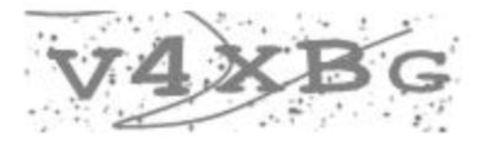

Title of research study: TITLE
Key Information
This consent form asks you to take part in a research study. The study is being conducted by [PRINCIPAL INVESTIGATOR], [TITLE] in the Department of [DEPARTMENT] at [UNIVERSITY].
Purpose: [PURPOSE].
What you will be asked to do: In this HIT, you will be asked to [METHODS]. The study should take approximately [ESTIMATED TIME] to complete and you will be paid [COMPENSATION] for your participation.
At the end of the study, you’ll receive a validation code that you must enter into [PLATFORM] in order to receive payment.
This experiment involves sound. Please ensure you have access to audio before beginning.
How your confidentiality will be maintained: [DATA MANAGEMENT PLAN].
Benefits and Risks: [BENEFITS]. [RISKS]
Your participation is voluntary. You may withdraw at any time and you may choose not to answer any question but you must proceed to the final screen of the study in order to receive your completion code which you must submit in order to be paid.
If you have any questions about this research, please contact our lab manager, [LAB MANAGER NAME], at [LAB MANAGER EMAIL]. You may also contact [PRINCIPAL INVESTIGATOR] ([PI EMAIL]) if you have any questions about the study. Finally, you may contact the [IRB COMMITTEE] at [IRB PHONE] or [IRB EMAIL] about your rights as a research participant.
By clicking on the “I Agree to Participate” button below, you indicate that you are 18 years of age or older, that you voluntarily agree to participate in this study and that you understand the information in this consent form. You have not waived any legal rights you would otherwise have as a participant in a research study.
Protocol: [PROTOCOL NUMBER]
You have declined to participate at this time.
If you change your mind, simply reload this webpage.
Before we begin, we would like to test your equipment. First, we will test your sound system.
Please press the TEST SOUND button below to continue.
If you do not hear the metronome sound after pressing the button below, please check the sound settings on your computer and refresh this page to try again.
If you have difficulties checking your equipment or if the continue button doesn't appear after you've pressed the test sound button, feel free to contact our lab manager, [LAB MANAGER NAME], at [LAB MANAGER EMAIL].
| SPACEBAR |
We would also like to make sure your keyboard is working properly and your keystrokes are being counted by our program. Please press the SPACEBAR on your keyboard. If the press is registered, the word SPACEBAR above will be highlighted in blue. Once you've completed the test, a continue button will appear so that you can move on to the task. If you have difficulties checking your equipment or if the continue button doesn't appear after you've pressed your spacebar, feel free to contact our lab manager, [LAB MANAGER NAME], at [LAB MANAGER EMAIL]. |
The practice trials are now over.
Before you get started, there is one last thing you should know.
That is, from time to time throughout the task, we will ask you how motivated you are to do well on the task.
We understand you may not be completely motivated to do well on the task, and your response will not affect your ability to participate, so please be as HONEST and ACCURATE as possible.
To do this, we will present you with a motive-sampling screen that looks like this:
We would now like to know about your motivation level over the last couple minutes of the task.
Please be as HONEST and ACCURATE as possible.
We're now ready to start the task!
When you are ready to begin the experiment, please click the 'Begin Task' button below
Just prior to the onset of this screen, I was:
The thoughts I was experiencing were moving freely:
| Use the slider below to indicate the depth of your mind wandering. | ||
| Remember, mind wandering is when you are thinking about something unrelated to the task. | ||
| Not At All Mind Wandering | Fully Mind Wandering | |
To confirm that you're a human being completing this study, please type the following numbers and letters exactly as you see them:
Please be advised: Refreshing your browser will cause the task to reset. Please do not refresh your browser.